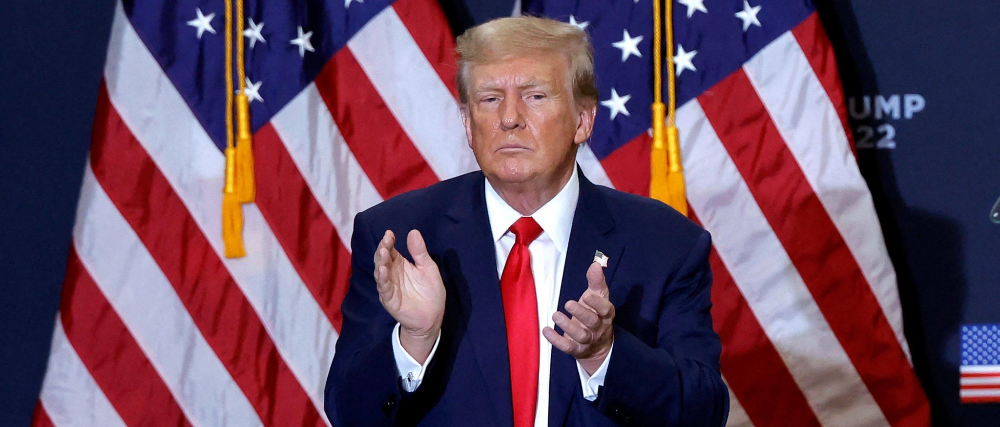

JA’RON SMITH: An America First Tax Policy Means Representing Underserved CommunitiesAs an official who served in the Trump White House, I know conservatives send representatives to Congress expecting to see their values represented in policy. The bipartisan tax deal that recently emerged on Capitol Hill does that and more, by both appealing to those voters and strategically positioning conservative values for future tax negotiations. About the deal: this tax package, valued at $78 billion, renews tax credits for research and development for businesses, and includes a targeted expansion of the child tax credit that would help working families– all without adding to the federal debt. Look across the aisle and see how some high-ranking Democrats are reacting to this deal. They view this bipartisan plan as favorable to Republican policy priorities. If you’re not convinced, a letter of support for this plan from prominent leaders in our party speaks volumes about its conservative appeal. Republican leaders like Missouri Rep. Jason Smith, who chairs the House Ways & Means Committee, deserves praise for his role in architecting this deal, since it not only provides immediate public value, but sets up Republicans for an even broader win down the road. The current child tax credit (CTC) was most recently structured by President Trump’s Tax Cuts and Jobs Act. I had the privilege of working on this law as a senior advisor to President Trump. It was briefly expanded in an overly progressive way under President Biden, but has since reverted to the TCJA baseline. Many tax provisions established in TCJA — including the child tax credit — will expire in 2025. This deadline will lead to consequential negotiations a year from now on most of the tax provisions up for renewal. The deal on the table shifts core components of the CTC to the right in two ways that will assist Republican lawmakers with negotiating on taxes in a year. First, the proposed expansion is more targeted and fiscally conservative than President Biden’s three years ago. A key strength of the child tax credit is its effectiveness in reducing child poverty. My book, “Underserved,” lays out a blueprint for addressing the needs of the underserved communities in America with conservative values. Policy that promotes work and makes it financially viable to raise children like the CTC can play a part in breaking a vicious cycle that keeps economic opportunity out of reach. We can achieve those benefits without furnishing wealthier families with a larger credit. This tax deal’s child tax credit would lift as many as 400,000 children out of poverty. Measures to extend the credit in 2025 will benefit from a tax deal today that can alleviate child poverty without runaway inflation caused by reckless spending. Second, the expansion requires work to earn the credit. Families must demonstrate an annual income of at least $2,500 to receive part of it — that’s a forgiving hurdle to clear. It also makes it easier for families with multiple children to receive the credit. Clearly this deal conforms more to the family values and original intent of the policy, as designed even before TCJA by then-Speaker Newt Gingrich in his Contract with America. As Republican Florida Sen. Marco Rubio said in a floor speech, this CTC is “pro job, pro family initiative, and I actually think it’s pro-growth [economically].” Key voters for success in 2024 appear to agree: 60 percent of independents support a CTC expansion. When paired with the Republican priority of renewing tax credits for American businesses, it’s clear how this deal is a win-win. That’s why 41 conservative tax organizations urged lawmakers to pass the business tax provisions included in the deal, as have just over a dozen pro-life organizations, which said that “few policy priorities [like the child tax credit] both enjoy bipartisan agreement and promise to make a significant difference in the lives of millions of American children and their families.” This deal shows voters that the Republican approach to families and the economy will achieve what Democrats hope to, without causing long stretches of inflationary strain on family budgets. It also showcases Republican-led innovation in America. The key business tax provisions included in the deal restore writing off expenses related to research and development, and allow businesses to immediately deduct capital expenses. This enables businesses to engage further in the innovation which creates American wealth and opportunity. This is especially important for industries specializing in technology like artificial intelligence. Cutting-edge research has high capital requirements and needs more access to funds to compete with rivals like China. By renewing these credits for businesses, we’re putting America first and helping businesses compete with China. From all angles, this bipartisan tax deal appears to be a net gain for Republicans and the America First movement. Conservatives should seize this opportunity and support it. Ja’Ron Smith served in the Trump Administration as Deputy Assistant to the President for Domestic Policy and Deputy Director of the White House Office of American Innovation. He currently works as a partner at CGCN. The views and opinions expressed in this commentary are those of the author and do not reflect the official position of the Daily Caller. |
 |